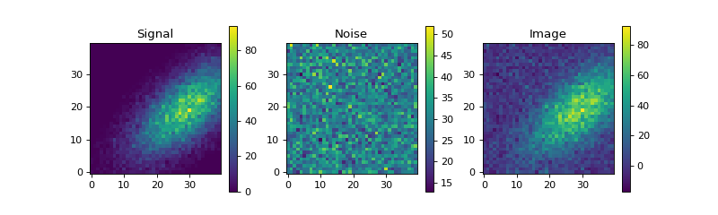

Toy model image generation¶
fake shower image generation for testing purposes
ctapipe.image.toymodel Module¶
Utilities to generate toymodel (fake) reconstruction inputs for testing purposes.
Example:
>>> from instrument import CameraGeometry
>>> geom = CameraGeometry.make_rectangular(20,20)
>>> showermodel = generate_2d_shower_model(centroid=[0.25, 0.0],
length=0.1,width=0.02, psi='40d')
>>> image, signal, noise = make_toymodel_shower_image(geom, showermodel.pdf)
>>> print(image.shape)
(400,)
"""Example how to make a toymodel shower image and plot it.
"""
import matplotlib.pyplot as plt
from ctapipe.image.toymodel import generate_2d_shower_model, \
make_toymodel_shower_image
from ctapipe.instrument import CameraGeometry
NX = 40
NY = 40
geom = CameraGeometry.make_rectangular(NX, NY)
showermodel = generate_2d_shower_model(centroid=[0.25, 0.0], length=0.1,
width=0.02, psi='40d')
image, signal, noise = make_toymodel_shower_image(geom, showermodel.pdf,
intensity=20, nsb_level_pe=30)
# make them into 2D arrays so we can plot them with imshow
image.shape = (NX, NY)
signal.shape = (NX, NY)
noise.shape = (NX, NY)
# here we just plot the images using imshow(). For a more general
# case, one should use a ctapipe.visualization.CameraDisplay
plt.figure(figsize=(10, 3))
plt.subplot(1, 3, 1)
plt.imshow(signal, interpolation='nearest', origin='lower')
plt.title("Signal")
plt.colorbar()
plt.subplot(1, 3, 2)
plt.imshow(noise, interpolation='nearest', origin='lower')
plt.title("Noise")
plt.colorbar()
plt.subplot(1, 3, 3)
plt.imshow(image, interpolation='nearest', origin='lower')
plt.title("Image")
plt.colorbar()
plt.show()
(Source code, png, hires.png, pdf)
{kind=link}
{kind=link}

Functions¶
generate_2d_shower_model(centroid, width, …) |
Create a statistical model (2D gaussian) for a shower image in a camera. |
make_toymodel_shower_image(geom, showerpdf) |
Generates a pedestal-subtracted shower image from a statistical shower model (as generated by shower_model). |